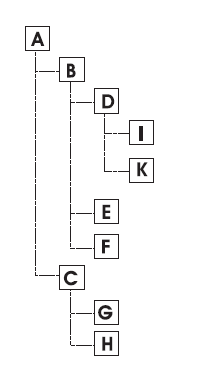
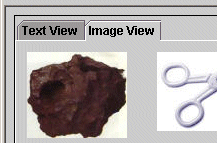
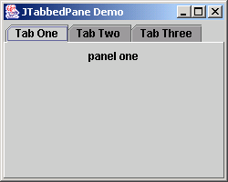
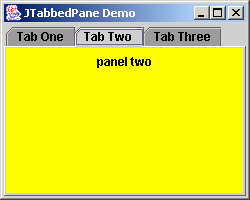
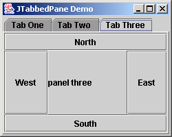
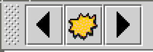

CS254 Visual Programming · Lecture 13
Other Components, Part 2
Trees (JTree, DefaultTreeModel, DefaultMutableTreeNode), JSplitPane, JTabbedPane, JToolBar, popup menus (JPopupMenu) and Actions. Every slide of Lecture 13 – Other Components 2 (34 slides) with all code and pictures, plus working copies of each component: build the BiologyTree step by step, drag a split pane's divider, add and remove tabs, dock a toolbar, right-click for a popup menu, and switch one Action off everywhere at once.
Slides 1–5
Trees
Other Components 1
Trees 2
- Hierarchical structures can often be represented by trees.
- Examples of hierarchical structures are
- Family trees,
- The organization structure of a company,
- The directory structure on a computer hard disk, or
- The embedding structure of Swing components
- For the abstract representation of the tree structure we use the non-graphical classes
DefaultTreeModelandDefaultMutableTreeNode. The classes are located injavax.swing.tree

DefaultMutableTreeNode 3
Implementation of the interface TreeNode
DefaultMutableTreeNode(Object label)defines a mutable tree node. The node receives object label as label.- When a node is displayed one sees a symbol and the label to the right of the symbol. The label is often a string. The term 'mutable' refers to the fact that clicking on such a node in the display makes the subtree under this node appear or disappear. This function is automatically supplied by
DefaultMutableTreeNode.
- When a node is displayed one sees a symbol and the label to the right of the symbol. The label is often a string. The term 'mutable' refers to the fact that clicking on such a node in the display makes the subtree under this node appear or disappear. This function is automatically supplied by
add(DefaultMutableTreeNode node)adds node as the right-most child to this node.
When nodes are displayed, they receive a default symbol.
- For DefaultMutableTreeNode this is the 'folder' symbol of Java if the node is not a leaf.
- If the node is a leaf the 'file' symbol of Java is displayed.
TreeModel 4
- Define the abstract structure of the tree.
- This is done by specifying the root and, for every node, specifying its children and their order. We shall use the following methods.
DefaultTreeModel(TreeNode root)creates a tree model with root node root.- We may use a
DefaultMutableTreeNodeinstead ofTreeNode. There is no parameterless constructor; you must always specify a root node!
- We may use a
int getChildCount(TreeNode parent)returns the number of children of parent.- If parent has n children they are numbered 0, 1, . . . , n− 1.
boolean isLeaf(TreeNode node)returns true if node is a leaf, i.e. has no children, and false otherwise.insertNodeInto(MutableTreeNode newChild, MutableTreeNode parent, int k)makesnewChildthe kth child ofparent. Ifparenthas n children then k has to be one of 0, 1, 2, . . . , n otherwise a runtime error will occur. If k is strictly less than n then the former children k through n− 1 become children k+ 1 through n andnewChildis squeezed in between children k− 1 and k+ 1.Object getChild(TreeNode parent, int k)returns the kth child ofparentas an Object and null if theparentdoes not have a kth child.removeNodeFromParent(TreeNode child)removeschildfrom its parent. Note that the whole subtree with rootchildis also removed.
JTree 5
JTree(TreeModel treeModel)receives aTreeModel(or aDefaultTreeModel) as parameter.setTreeModel(TreeModel treeModel)is used to set the tree modelputClientProperty("JTree.lineStyle","Angled")is used to display the angled lines corresponding to tree's edges.- Alternative to Angled'
- 'Horizontal', where horizontal lines between the nodes indicate the structure,
- 'None' where only indentation is used.
Slides 6–7
JTree examples
JTree example 6
import javax.swing.*;
import javax.swing.tree.*;
public class BiologyTree extends JTree {
private DefaultTreeModel biologyTreeModel;
public BiologyTree(){
makeModel();
this.setModel(biologyTreeModel);
this.putClientProperty("JTree.lineStyle","Angled");
}
private void makeModel(){
DefaultMutableTreeNode root = new DefaultMutableTreeNode("Trees");
DefaultMutableTreeNode leaved = new DefaultMutableTreeNode("Leaved Trees");
DefaultMutableTreeNode conifer = new DefaultMutableTreeNode("Conifers");
DefaultMutableTreeNode beech = new DefaultMutableTreeNode("Beech");
DefaultMutableTreeNode oak = new DefaultMutableTreeNode("Oak");
DefaultMutableTreeNode birch = new DefaultMutableTreeNode("Birch");
DefaultMutableTreeNode pine = new DefaultMutableTreeNode("Pine");
DefaultMutableTreeNode fir = new DefaultMutableTreeNode("Fir");
DefaultMutableTreeNode beechR = new DefaultMutableTreeNode("Red Leaved");
DefaultMutableTreeNode beechG = new DefaultMutableTreeNode("Green Leaved");
biologyTreeModel = new DefaultTreeModel(root);
biologyTreeModel.insertNodeInto(leaved ,root ,0);
biologyTreeModel.insertNodeInto(conifer,root ,1);
biologyTreeModel.insertNodeInto(beech ,leaved ,0);
biologyTreeModel.insertNodeInto(oak ,leaved ,1);
biologyTreeModel.insertNodeInto(birch ,leaved ,1);
biologyTreeModel.insertNodeInto(pine ,conifer,0);
biologyTreeModel.insertNodeInto(fir ,conifer,1);
biologyTreeModel.insertNodeInto(beechR ,beech ,0);
biologyTreeModel.insertNodeInto(beechG ,beech ,1);
}
}import SimpleFrame.SimpleFrame;
import java.awt.*;
class TreeFrame extends SimpleFrame {
public TreeFrame() {
this.setSize(300,500);
BiologyTree bioTree = new BiologyTree();
this.getContentPane().add(bioTree,BorderLayout.CENTER);
}
public static void main(String[] args) {
TreeFrame treeFrame = new TreeFrame();
treeFrame.showIt("Tree Frame");
}
}The end of the add(bioTree, BorderLayout. line is cut off at the edge of the slide; CENTER is the only choice that fills the frame.
Try it: build the BiologyTree, then change it
AddedPress Next call to run makeModel() one insertNodeInto at a time; the line runs in the code above. Watch line 5: Birch is inserted at position 1, so it squeezes in before Oak. Then click a node to select it and try the model methods. Click ▸/▾ to open and close a folder.
JTree example 2 7
import javax.swing.*;
import javax.swing.tree.*;
import java.io.File;
public class DirectoryTree extends JTree {
private DefaultTreeModel directoryTreeModel;
//The following path might have to be changed.
private String startDir = "./";
private File startFile;
public DirectoryTree() {
startFile = new File(startDir);
recursion(startFile);
this.setModel(directoryTreeModel);
}
public DefaultMutableTreeNode recursion(File currentFile)
{
DefaultMutableTreeNode curNode =
new DefaultMutableTreeNode(currentFile.getName());
if(currentFile == startFile)
{
directoryTreeModel = new DefaultTreeModel(curNode);
}
if(currentFile.isDirectory())
{
File[] files = currentFile.listFiles();
for (int i = 0; i < files.length; i++) {
directoryTreeModel.insertNodeInto(recursion(files[i]),curNode,0);
}//for i
}
return(curNode);
}
}import SimpleFrame.SimpleFrame;
import javax.swing.*;
import java.awt.*;
public class DirectoryFrame extends SimpleFrame {
public DirectoryFrame() {
this.setSize(300,500);
DirectoryTree dirTree = new DirectoryTree();
JScrollPane scrollpane = new JScrollPane(dirTree);
this.getContentPane().add(scrollpane,BorderLayout.CENTER);
}
public static void main(String[] args) {
DirectoryFrame dirTreeFrame = new DirectoryFrame();
dirTreeFrame.showIt("Directory Tree Frame");
}
}Here too the slide cuts the line off at BorderLayout.CENT; it's CENTER.
Try it: the recursion on a sample project folder
AddedA NetBeans project folder, as listFiles() would return it. Compare the slide's insert-at-0 with insert-at-the-end. The log shows the recursive calls.
Slides 8–10
JSplitPane
JSplitPane 8
- Split panes can be seen as a pair of panels inside a rectangular area.
- The two components are separated by a vertical or horizontal bar, called a divider.
- The divider bar can be moved by using the mouse, thus adjusting the visible area of the two components.
- If the divider is moved to the left or right margin of the split pane (in case of a vertical separation) then only the right (or left), component is visible.
- Split panes are used, for example, if information is displayed in different formats.
JSplitPane 9
JSplitPane(int division)is the constructor.- Parameter division specifies whether the division is horizontal or vertical.
- There are predefined constants HORIZONTAL_SPLIT and VERTICAL_SPLIT in class JSplitPane.
- Observe that choosing HORIZONTAL_SPLIT determines that the two components are placed horizontally next to each other; the divider bar is the vertical.
- Similarly VERTICAL_SPLIT results in placing one component on top of the other and a horizontal divider bar.
setXXXComponent(Component comp)embeds component comp into one of the two areas.- For XXX = Left, comp becomes the left component if HORIZONTAL_SPLIT is used.
- If XXX = Left is used with VERTICAL_SPLIT then comp becomes the top component. The other choices for XXX then have the obvious meanings.
- XXX can be Left, Right, Top, Bottom
setDividerSize(int width)determines the width of the divider bar in pixels.setDividerLocation(int pos)determines the position of the divider bar.- Parameter pos is the distance of the divider bar from the left margin of the splitpane when HORIZONTAL_SPLIT is used, and from the upper margin when VERTICAL_ SPLIT is used.
setDividerLocation(double fraction)determines the position of the divider bar. Parameter fraction is the fraction of the JSplitPane's size horizontal or vertical size, depending on the way it is split.- Therefore fraction has to be in the interval [0, 1], otherwise an IllegalArgumentException is thrown.
- The fraction refers to the current width of the splitpane. If this method is called before the component is visible then the width is zero and the divider will be at the left (or top) margin.
setOneTouchExpandable(boolean b)– if parameter b is true then two small arrows appear on the divider bar.- They point towards the two areas. When clicking on one arrow the divider bar jumps in that direction. If the divider bar is not at a margin of the split pane, it jumps to that margin to which the arrow points. If it is at the margin it jumps back to the previous position.
- If parameter b is false the arrows are not shown and the described functions are not available.
JSplitPane Example 10
Import SimpleFrame.SimpleFrame;
import java.awt.*;
import java.awt.event.*;
import java.io.*;
import javax.swing.*;
public class SplitPaneFrame extends SimpleFrame {
private JButton okButton;
private JList list;
private JLabel picLabel1, picLabel2;
private ImageIcon picture1, picture2;
private static String picturePath = ".";
public SplitPaneFrame() {
this.setSize(800,400);
JSplitPane splitPane1 = new JSplitPane(JSplitPane.HORIZONTAL_SPLIT);
JSplitPane splitPane2 = new JSplitPane(JSplitPane.VERTICAL_SPLIT);
splitPane1.setOneTouchExpandable(true);
splitPane1.setDividerSize(20);
this.getContentPane().add(splitPane1,BorderLayout.CENTER);
splitPane1.setRightComponent(splitPane2);
picture1 = new ImageIcon(picturePath+"/Orange.png");
picture2 = new ImageIcon(picturePath+"/Banana.png");
picLabel1 = new JLabel(picture1);
JScrollPane sp2a = new JScrollPane(picLabel1);
splitPane2.setTopComponent(sp2a);
picLabel2 = new JLabel(picture2);
JScrollPane sp2b = new JScrollPane(picLabel2);
splitPane2.setBottomComponent(sp2b);
splitPane2.setDividerLocation(150);
splitPane1.setDividerLocation(100);
File startFile = new File(picturePath);
list = new JList(startFile.listFiles());
JScrollPane sp = new JScrollPane(list);
splitPane1.setLeftComponent(sp);
okButton = new JButton("OK");
okButton.setBackground(Color.cyan);
this.getContentPane().add(okButton,BorderLayout.SOUTH);
okButton.addActionListener(new ActionListener()
{
public void actionPerformed(ActionEvent e)
{
String filename = ((File)(list.getSelectedValue())).getPath();
if((filename.endsWith(".png")) || (filename.endsWith(".jpg")) ||
(filename.endsWith(".PNG")) || (filename.endsWith(".JPG")))
{
picLabel2.setIcon(new ImageIcon(filename));
}
}
});
}
public static void main(String[] args)
{
SplitPaneFrame spf = new SplitPaneFrame();
spf.showIt("Split-Panes",200,200);
}
}Try it: SplitPaneFrame, with splitPane1's settings
AddedDrag either divider. Click the one-touch arrows on the thick one. Pick a file and press OK (try notes.txt, and OK with nothing selected). The controls change splitPane1.
Slides 11–15
JTabbedPane
JTabbedPane 11
a container that holds subcontainers, each with a "tab" label and content
- A tabbed pane is initially empty, i.e. it contains no pages. Then components are added and each of them becomes a new page.
- When adding a component, the text for the tab should be provided.
- The tabs are arranged from left to right (or from top to bottom) in the order in which the components are added.
- Selecting a component as the topmost one does not change the order of the tabs. This order is reflected in the so-called indices. Every page has an index (index).
- A tabbed pane with n pages has indices 0, 1, . . . , n− 1. The index of the component with the left most (topmost) tab is 0.
- The indices can, for example, be used to remove a component or to insert a new one at a certain position.

JTabbedPane 12
public JTabbedPane()- The tabs are placed on the upper edge.
public JTabbedPane(int tabPosition)
Constructs a new tabbed pane. Defaults to having the tabs onTOP; can be set toJTabbedPane.BOTTOM,LEFT,RIGHT, etc.Public void add(Component comp)addscompas last page. 'Last' means that the tab is the right-most (or bottom-most) one. The tab does not have any text.public void add(String tabTitle, Component comp)- adds
compas last page. 'Last' means that the tab is the right-most (or bottom-most) one. The tab is labelled bytabTitle.
- adds
public void addTab(String tabTitle, Component comp)- adds
compas last page. 'Last' means that the tab is the right-most (or bottom-most) one. The tab is labelled bytabTitle.
- adds
Public void setTitleAt(int pos, String tabTitle)assigns a new texttabTitleto the tab at positionpos.public void setSelectedComponent(Component comp)selects the page containing componentcomp, i.e. this page is made visible.public void setSelectedIndex(int pos)selects the page whose tab is at positionpos, i.e. this page is made visible.
JTabbedPane 13
| Method | What it does |
|---|---|
public void insertTab(String title, Icon icon, Component component, String tip, int index) | Inserts a new tab for the given component, at the given index, represented by the given title and/or icon, either of which may be null. |
public void remove(Component comp) | Removes the specified Component from the JTabbedPane. |
public void remove(int index) | Removes the tab and component which corresponds to the specified index |
public void removeAll() | Removes all the tabs and their corresponding components from the tabbedpane. |
Component getSelectedComponent() | Returns the currently selected component for this tabbedpane. |
int getSelectedIndex() | Returns the currently selected index for this tabbedpane. |
Component getTabComponentAt(int index) | Returns the tab component at index. |
int getTabCount() | Returns the number of tabs in this tabbedpane. |
public void setTabLayoutPolicy(int tabLayoutPolicy) | Sets the policy which the tabbedpane will use in laying out the tabs when all the tabs will not fit within a single run. Possible values are: JTabbedPane.WRAP_TAB_LAYOUT, JTabbedPane.SCROLL_TAB_LAYOUT. The default value, if not set by the UI, is JTabbedPane.WRAP_TAB_LAYOUT. |
setComponentAt(int index, Component component) | Sets the component at index to component. |
addChangeListener(ChangeListener l) | Adds a ChangeListener to this tabbedpane. |
JTabbedPane Example 14–15
import java.awt.*;
import javax.swing.*;
public class JTabbedPaneDemo extends JFrame {
// set up GUI
public JTabbedPaneDemo() {
super("JTabbedPane Demo ");
JTabbedPane tabbedPane = new JTabbedPane();
JLabel label1 = new JLabel("panel one", SwingConstants.CENTER);
JPanel panel1 = new JPanel();
panel1.add(label1);
tabbedPane.addTab("Tab One", null, panel1, "First Panel");
JLabel label2 = new JLabel("panel two", SwingConstants.CENTER);
JPanel panel2 = new JPanel();
panel2.setBackground(Color.YELLOW);
panel2.add(label2);
tabbedPane.addTab("Tab Two", null, panel2, "Second Panel");
// set up panel3 and add it to JTabbedPane
JLabel label3 = new JLabel("panel three");
JPanel panel3 = new JPanel();
panel3.setLayout(new BorderLayout());
panel3.add(new JButton("North"), BorderLayout.NORTH);
panel3.add(new JButton("West"), BorderLayout.WEST);
panel3.add(new JButton("East"), BorderLayout.EAST);
panel3.add(new JButton("South"), BorderLayout.SOUTH);
panel3.add(label3, BorderLayout.CENTER);
tabbedPane.addTab("Tab Three", null, panel3, "Third Panel");
// add JTabbedPane to container
getContentPane().add(tabbedPane);
setSize(250, 200);
setVisible(true);
} // end constructor
public static void main(String args[]) {
JTabbedPaneDemo tabbedPaneDemo = new JTabbedPaneDemo();
tabbedPaneDemo.setDefaultCloseOperation(JFrame.EXIT_ON_CLOSE);
}
}


Slide 14 holds the first half of the constructor and slide 15 ("JTabbedPane Example Cont.") the rest plus the three screenshots; they're joined here into one file. The four-argument addTab(title, icon, component, tip) sets the tooltip shown when you hover over the tab.
Try it: JTabbedPaneDemo, live
AddedThe slide's three tabs. Click tabs (hover for the tooltip), then use the methods below. The log is a ChangeListener that reports every change of selected tab.
Slides 16–17
JToolBar
JToolbar 16
a movable dock container to hold common app buttons and commands
public JToolBar()creates a new toolbar with horizontal orientationpublic JToolBar(int orientation)creates a new toolbar with specified orientationpublic JToolBar(String title)creates a new toolbar with specified namepublic JToolBar(String title, int orientation)
Constructs a new tool bar, with optional title and orientation; can beJToolBar.HORIZONTALorVERTICAL, default horizontalpublic void add(Component comp)
Adds the given component to this tool bar.- Note: If using JToolbar, don't put other components in N/E/S/W.

JToolbar 17
| Method | What it does |
|---|---|
addSeparator() | adds the separator of default size to the end of toolbar |
addSeparator(Dimension size) | Appends a separator of a specified dimension. |
add(Action a) | adds a new JButton that follows the specified action. |
setFloatable(boolean b) | if true is passed then the toolbar can be dragged to other locations or else not . |
setLayout(LayoutManager m) | set layout of the toolbar |
setOrientation(int o) | sets the orientation of toolbar |
getComponentIndex(Component c) | Returns the index of the specified component. |
getComponentAtIndex(int i) | Returns the component at the specified index |
Try it: drag the toolbar to another edge
AddedGrab the dotted handle and drop the toolbar near another edge of the window, or outside it to make it float. Docked at West or East it turns vertical, like Swing's. Turn off setFloatable and the handle disappears.
Slides 18–24 and 33
Popup menus
Popup Menu 33
A Popup Menu is a menu that appears when the user performs a mouse action, usually a right-click.
Also called:
- Context Menu
- Shortcut Menu
This definition is slide 33, near the end of the PDF; it's placed first here because it introduces the topic.
Popup Menu 18
Why Use Popup Menus?
Purpose
- Provide quick actions
- Reduce screen clutter
- Show options relevant to the selected item
Examples:
- Copy / Paste
- Rename / Delete
- Refresh
Swing Class for Popup Menu 19
- JPopupMenu
- Part of javax.swing
- Can contain:
- JMenuItem
- JCheckBoxMenuItem
- JRadioButtonMenuItem
- Separators
Creating a Popup Menu 20
//Create Popup Menu
JPopupMenu popup = new JPopupMenu();
//Create Menu Items
JMenuItem copy = new JMenuItem("Copy");
JMenuItem paste = new JMenuItem("Paste");
//Adding Items to Popup Menu
popup.add(copy);
popup.add(paste);
popup.addSeparator();
popup.add(new JMenuItem("Delete"));
//Popup Menu with Action
Action copyAction = new AbstractAction("Copy") {
public void actionPerformed(ActionEvent e) {
System.out.println("Copied");
}
};
popup.add(copyAction);Creating a Popup Menu 21
//Showing the Popup Menu
component.addMouseListener(new MouseAdapter() {
public void mousePressed(MouseEvent e) {
if (e.isPopupTrigger())
popup.show(e.getComponent(), e.getX(), e.getY());
}
public void mouseReleased(MouseEvent e) {
if (e.isPopupTrigger())
popup.show(e.getComponent(), e.getX(), e.getY());
}
});isPopupTrigger() is a method of MouseEvent
It checks if the current mouse event should show a popup menu (usually a right-click)
Platform-dependent:
- On Windows, right mouse pressed → trigger
- On macOS, it may be released → trigger
So to handle it safely, you usually check in both mousePressed() and mouseReleased().
Try it: right-click (or long-press) the list
AddedThe popup from slide 20 with slide 21's listener. Pick the platform, then untick one of the two checks to see when the menu fails to appear. The log shows each mouse event and what isPopupTrigger() returned.
- report.docx
- photo.png
- notes.txt
- budget.xlsx
Popup Menu vs Menu Bar 22
| Menu Bar | Popup Menu |
|---|---|
| Menu Bar | Popup Menu |
| Always visible | Appears on right-click |
Uses JMenuBar | Uses JPopupMenu |
| Global options | Context-specific options |
Where Popup Menus Are Used 23
Common Applications
- Text editors
- File managers
- Tables (JTable)
- Lists (JList)
- Trees (JTree)
Advantages of Popup Menus
- Saves screen space
- Improves usability
- Context-sensitive actions
- Professional UI look
JPopupMenu – Important Methods 24
| Method | Purpose |
|---|---|
add(JMenuItem item) | Adds a menu item to the popup menu. |
add(Action a) | Creates a JMenuItem from the Action and adds it. |
addSeparator() | Adds a visual separator line between menu items. |
show(Component invoker, int x, int y) | Displays the popup menu at the specified (x, y) coordinates relative to the invoker. |
setVisible(boolean b) | Shows or hides the popup menu. |
getComponent(int index) | Returns the menu item at a given index. |
getComponentCount() | Returns the number of menu items in the popup. |
getSubElements() | Returns all menu sub-elements. |
MenuElement[] getSubElements() Returns an array of MenuElement objects contained in a popup menu or menu.
- Useful if you want to inspect, traverse, or manipulate all items in a menu programmatically
- Each MenuElement can be:
- JMenuItem
- JMenu (submenu)
- JPopupMenu (cut off at the bottom of the original slide)
Slides 25–32 and 34
Actions
Action 25
An Action represents a command that can be shared by multiple Swing components.
- It defines what to do
- It also stores:
- Name (text)
- Icon
- Tooltip
- Enabled/disabled state
Action vs ActionListener 26
| ActionListener | Action |
|---|---|
| Only behavior | Behavior + properties |
| Attached to one component | Shared by many components |
| No automatic sync | Auto sync (enable/disable) |
| More code | Cleaner & reusable |
Action Interface 27
- Action is an interface
- It extends ActionListener
public interface Action extend ActionListener
- Implementation: AbstractAction
Creating an Action 28
Action helloAction = new AbstractAction("Say Hello") {
public void actionPerformed(ActionEvent e) {
System.out.println("Hello!");
}
};Adding Action to Components
toolBar.add(helloAction); menu.add(helloAction);
What happens internally:
- Toolbar → creates a
JButton - Menu → creates a
JMenuItem - No need to create buttons manually
One Action – Multiple Components 29
Reusability
- Same Action used for:
- Toolbar button
- Menu item
- Popup menu
helloAction.setEnabled(false);
All linked components are disabled automatically
Action Properties 30
Common Action Keys
- Action.NAME
- Action.SMALL_ICON
- Action.SHORT_DESCRIPTION
- Action.ACCELERATOR_KEY
helloAction.putValue(
Action.SHORT_DESCRIPTION, "Click to say hello");All linked components are disabled automatically
Advantages of Action 31
- Why Use Action?
- Code reuse
- Consistent UI behavior
- Easy enable/disable
- Cleaner design
- Professional Swing applications
When to Use Action 32
Recommendation
- Use Action when:
- Same command appears in multiple places
- You want centralized control
- You are building medium/large Swing apps
- Use ActionListener for:
- Simple, one-time buttons
Action – Important Methods 34
| Method / Property | Purpose |
|---|---|
actionPerformed(ActionEvent e) | Defines what happens when the action is triggered. |
putValue(String key, Object value) | Sets a property of the action (name, icon, tooltip, etc.). Common keys: Action.NAME, Action.SHORT_DESCRIPTION, Action.SMALL_ICON. |
getValue(String key) | Gets the property value of the action. |
setEnabled(boolean b) | Enables or disables the action. All components linked to this action update automatically. |
isEnabled() | Checks if the action is currently enabled. |
Try it: one Action, three components
AddedThe toolbar button, the Greet menu item and the right-click popup item were all made from the same helloAction. Change the Action and watch all three follow. Then switch to the ActionListener version to see why "no automatic sync" matters.
All of Lecture 13
Flashcards
Tap the card to flip it.